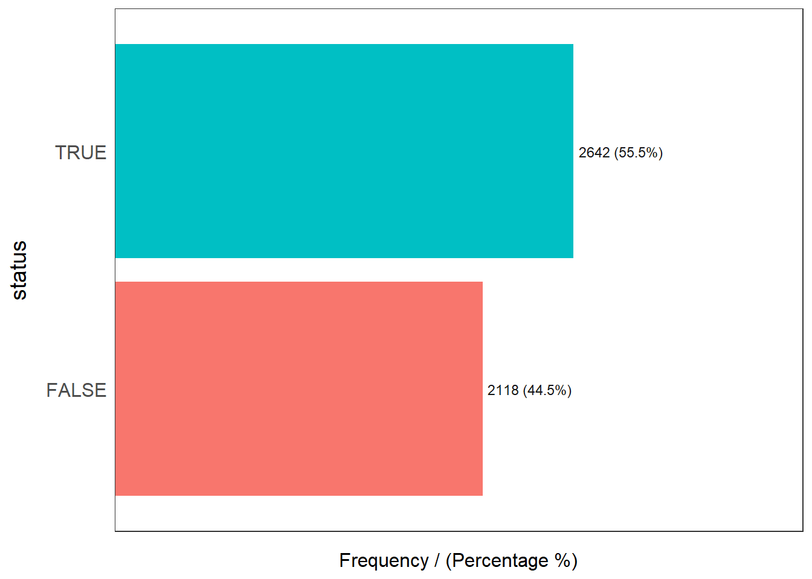

pacman::p_load(here,
sf, tidyverse, spdep,
funModeling, tmap, ggpubr,
corrplot, heatmaply, cluster, ClustGeo, factoextra, GGally,
blorr, skimr, caret, GWmodel,report
)ex5
boundary_path <- here("data", "dataOsun", "Osun.rds")
boundary_path[1] "D:/f4sared/ISSS624/data/dataOsun/Osun.rds"data_path <- here("data", "dataOsun", "Osun_wp_sf.rds")
data_path[1] "D:/f4sared/ISSS624/data/dataOsun/Osun_wp_sf.rds"osun <- read_rds(boundary_path)osun_wp_sf <- read_rds(data_path)osun_wp_sf %>% freq(input = 'status')Warning: The `<scale>` argument of `guides()` cannot be `FALSE`. Use "none" instead as
of ggplot2 3.3.4.
ℹ The deprecated feature was likely used in the funModeling package.
Please report the issue at <https://github.com/pablo14/funModeling/issues>.
status frequency percentage cumulative_perc
1 TRUE 2642 55.5 55.5
2 FALSE 2118 44.5 100.0tmap_mode('view')
tm_shape(osun)+
tm_polygons(alpha=0.4)+
tm_shape(osun_wp_sf) +
tm_dots(col="status", alpha = 0.6) +
tm_view(set.zoom.limits = c(9,12))osun_wp_sf %>% skim() osun_wp_sf_clean <- osun_wp_sf %>%
filter_at(vars(status,
distance_to_primary_road,
distance_to_secondary_road,
distance_to_tertiary_road,
distance_to_city,
distance_to_town,
water_point_population,
local_population_1km,
usage_capacity,
is_urban,
water_source_clean),
all_vars(!is.na(.))) %>%
mutate(usage_capacity = as.factor(usage_capacity))osun_wp <- osun_wp_sf_clean %>% select(c(7,35:39,42:43,46:47,57)) %>% st_set_geometry(NULL)cluster_vars.cor = cor(osun_wp[,2:7])
corrplot.mixed(cluster_vars.cor,
lower="ellipse",
upper = "number",
tl.pos="lt",
diag="l",
tl.col="black")model <- glm(status ~ distance_to_primary_road +
distance_to_secondary_road +
distance_to_tertiary_road +
distance_to_city +
distance_to_town +
is_urban +
usage_capacity +
water_source_clean +
water_point_population +
local_population_1km,
data = osun_wp_sf_clean,
family = binomial(link = "logit"))blr_regress(model)# report(model)blr_confusion_matrix(model, cutoff=0.5)osun_wp_sp <- osun_wp_sf_clean %>%
select(c(status,
distance_to_primary_road,
distance_to_secondary_road,
distance_to_tertiary_road,
distance_to_city,
distance_to_town,
water_point_population,
local_population_1km,
is_urban,
usage_capacity,
water_source_clean)) %>% as_Spatial()
osun_wp_spbw.fixed <- bw.ggwr(status ~
distance_to_primary_road +
distance_to_secondary_road+
distance_to_city+
distance_to_town+
water_point_population+
local_population_1km+
is_urban+
usage_capacity+
water_source_clean,
data=osun_wp_sp,
family="binomial",
approach="AIC",
kernel = "gaussian",
adaptive = FALSE,
longlat = FALSE)bw.fixedgwlr.fixed <- ggwr.basic(status ~
distance_to_primary_road +
distance_to_secondary_road +
distance_to_tertiary_road +
distance_to_city +
distance_to_town +
water_point_population +
local_population_1km +
is_urban +
usage_capacity +
water_source_clean,
data=osun_wp_sp,
bw=2448.701,
family = "binomial",
kernel = "gaussian",
adaptive = FALSE,
longlat = FALSE)gwlr.fixedgwr.fixed <- as.data.frame(gwlr.fixed$SDF)gwr.fixed <- gwr.fixed %>% mutate(most=ifelse(gwr.fixed$yhat >= 0.5, T, F))gwr.fixed$y <- as.factor(gwr.fixed$y)
gwr.fixed$most <- as.factor(gwr.fixed$most)
CM <- confusionMatrix(data=gwr.fixed$most, reference = gwr.fixed$y)
CMosun_wp_sf_selected <- osun_wp_sf_clean %>% select(c(ADM2_EN, ADM2_PCODE,
ADM1_EN, ADM1_PCODE,
status))gwr_sf.fixed <- cbind(osun_wp_sf_selected, gwr.fixed)tmap_mode("view")
prob_T <- tm_shape(osun) +
tm_polygons(alpha=0.1) +
tm_shape(gwr_sf.fixed) +
tm_dots(col="yhat",
border.col = "gray60",
border.lwd = 1) +
tm_view(set.zoom.limits = c(8,14))
prob_Ttertiary_TV <- tm_shape(osun) +
tm_polygons(alpha=0.1) +
tm_shape(gwr_sf.fixed) +
tm_dots(col="distance_to_tertirary_road_TV", border.col="gray60", border.lwd=1) + tm_view(set.zoom.limits = c(8,14))tmap_arrange(tertiary_SE, tertiary_TV, asp=1, ncol=2, sync=True)